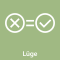

Urheber: Klaus Rössel
Lizenz:CC BY-NC 4.0.
Ein auf diesen Texten und Piktogrammen basierendes Kartenspiel ist unter https://rhetorisches-quartett.de/ erhältlich.
Das Ziel einer Lüge ist, beim Gegenüber willentlich einen falschen oder als falsch angenommenen Eindruck zu erwecken. Somit kann auch eine wahre Aussage eine Lüge sein, wenn sie bewusst falsche Schlussfolgerungen provozieren soll oder der Aussagende sie für falsch hält. Andersherum sind fehlerhafte Schlüsse oder Irrtümer keine Lügen, da sie nicht der Täuschung dienen.
Eine fließende Grenze besteht zur wissentlichen Duldung von falschen Eindrücken beim Gegenüber durch Verschweigen von Informationen. Auch ist keine klare Unterscheidung möglich zu nicht grundsätzlich falscher, aber verzerrter Darstellung, wie sie z.B. bei Übertreibungen praktiziert wird, oder Fehlern, die durch Vereinfachung und →Verallgemeinerung bewusst in Kauf genommen werden, oder der Anwendung von Metaphern, um einen komplexen Sachverhalt zu erläutern.
Nicht alle Lügen sind verbal - auch vorgetäuschte Gefühle, Fälschungen (Dokumente, Videos, Bilder, Produkte, Webseiten ...) oder Handlungen, die das Gegenüber etwas Unwahres glauben lassen sollen, stellen Lügen dar. So gibt, wer im Krankenhaus einen Kittel trägt, z.B vor, zum medizinischen Personal zu gehören.
Lügen können auch zur Unterhaltung eingesetzt werden, etwa für Streiche oder Überraschungen. Wird hingegen nicht erwartet, dass der Unwahrheit Glauben geschenkt wird, liegt keine bewusste Täuschung mehr vor, wie etwa bei der Darstellung oder Erzählung fiktiver Ereignisse.

Ein auf diesen Texten und Piktogrammen basierendes Kartenspiel ist unter https://rhetorisches-quartett.de/ erhältlich.